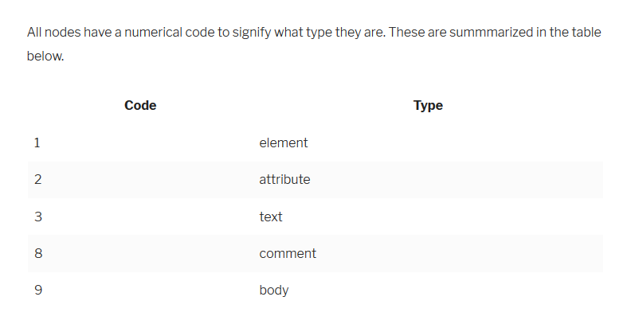

Notes Week 3
Object methods, "this"
JavaScript InfoObjects are usually created to represent entities of the real world, like users, orders and so on And, in the real world, a user can act: select something from the shopping cart, login, logout etc. METHOD SHORTHAND
To access the object, a method can use the this keyword. The value of this is the object “before dot”, the one used to call the method.
Example below
let user = {
name: "John",
age: 30,
sayHi() {
// "this" is the "current object"
alert(this.name);
}
};
user.sayHi(); // John
>In JavaScript this is “free”, its value is evaluated at call-time and does not depend on where the method was declared, but rather on what object is “before the dot”.
Summary
- • Functions that are stored in object properties are called “methods”.
- • Methods allow objects to “act” like object.doSomething().
- • Methods can reference the object as this.
- • The value of this is defined at run-time.
- • When a function is declared, it may use this, but that this has no value until the function is called.
- • A function can be copied between objects.
- • When a function is called in the “method” syntax: object.method(), the value of this during the call is object.
Please note that arrow functions are special: they have no this. When this is accessed inside an arrow function, it is taken from outside.
Sitepoint
Ch5 OBJECTS
“Everything in JavaScript is either one of the six primitive data types we met in Chapter 2 (strings, numbers, booleans, symbols, undefined, and null) or an object” Objects are: arrays, functions, Object literals, Adding properties to objects, Object methods, JSON, Math object, Date object, RegExp object
Objects are: arrays, functions, Object literals, Adding properties to objects, Object methods, JSON, Math object, Date object, RegExp object
Object Literals
Object: self-contained set of related values and functions. If a property’s value is a function, it in a method. : Objects are often used to keep any related information and functionality together in the same place. For example, if you wrote functions that found the perimeter and area of a square, you might want to group them together as methods of the same object that also included a length property.” OBJECT LITERAL: an object created by wrapping all properties and methods in curly braces {}
Example from book
const superman = {
name: 'Superman',
'real name': 'Clark Kent',
height: 75,
weight: 235,
hero: true,
villain: false,
allies: ['Batman','Supergirl','Superboy'],
fly() {
return 'Up, up and away!';
}
};
CREATING OBJECTS: “To create an object literal, simply enter a pair of curly braces. The following
example creates an empty object that is assigned to the variable spiderman :
const spiderman = {};
shorthand:
const name = 'Iron Man';
const realName = 'Tony Stark';
// long way
const ironMan = { name: name, realName: realName };
// short ES6 way
const ironMan = { name, realName };
ACCESSING PROPERTIES: use dot notation ex superman.name or use brackets superman[‘name’]
To call an object’s method we can also use dot or bracket notation. Calling a method is the same as
invoking a function, so parentheses need to be placed after the method name:superman.fly()
<< 'Up, up and away!'
superman['fly']()
<< 'Up, up and away!'
In operator checks to see if an operator has a particular property.
‘city’ in superman;
<
<
To find all the properties of an object use a for in loop
To add a property superman.city = ‘Metropolis’; ((Metropolis (this adds to the list)
To change a property just assign it to the value of an object = superman[‘rel name’] = ‘Kal-El’;
<
OBJECTS CAN CONTAIN OTHER OBJECTS
Nested objects:
const jla = {
superman: { realName: 'Clark Kent' },
batman: { realName: 'Bruce Wayne' },
wonderWoman: { realName: 'Diana Prince" },
flash: { realName: 'Barry Allen' },
aquaman: { realName: 'Arthur Curry' },
}
The values in nested objects can be accessed by referencing each property name in order using either
dot or bracket notation:
jla.wonderWoman.realName
<< "Diana Prince"
jla['flash']['realName']
<< "Barry Allen"
You can even mix the different notations:
jla.aquaman['realName']
<< "Arthur Curry"
this
“the keyword this refers to the object that it is within. It can be used inside methods to gain access to the object’s properties.”
JSON
“JSON is a string representation of the object literal notation that we have just seen. There are, however, a couple of key differences:
- 1. Property names must be double-quoted
- 2. Permitted values are double-quoted strings, numbers, true, false, null, arrays and objects
- 3. Functions are not permitted values
JSON.parse and Json.stringify
Math Object
Math.abs(5); absolute value
Math.ceil(4.3); rounding up to next integer
Math.floor(4.3) round down to next integer
Math.round(4.3); rounds to the nearest integer
Powers and Roots
Math.exp
Math.pow
Math.sqrt
Math.cbrt
Math.hypot
Logarithmic Methods
Min ans max methods
Trigonomic functions
RANDOM NUMBERS
Math.random(); multiply this by a number to find anything from 0 – the number multiplied in the random numbers
THE DATE OBJECT
const today = new Date();
The variable today now points to a Date object. To see what the date is, we use the toString()
method that all objects have:
today.toString();
<< 'Tue Feb 14 2017 16:35:18 GMT+0000 (GMT)'
Getter/setter for dates
RegExp = regular expression can be used to search for patters ex words ending in ing
Chapter 5 Summary
- • Objects are a collection of key-value pairs placed inside curly braces {}.
- • Objects have properties that can be any JavaScript value. If it’s a function, it’s known as amethod.
- • An object’s properties and methods can be accessed using either dot notation or square bracket notation.
- • Objects are mutable, which means their properties and methods can be changed or removed.
- • Objects can be used as parameters to functions, which allows arguments to be entered in any order, or omitted.
- • Nested objects can be created by placing objects inside objects.
- • JSON is a portable data format that uses JavaScript object literals to exchange information.
- • The Math object gives access to a number of mathematical constants.
- • The Math object can be used to perform mathematical calculations.
- • The Date object can be used to create date objects.
- • Once you’ve created a Date object, you can use the getter methods to access information about that date.
- • Once you’ve created a Date object, setter methods can be used to change information about that date.
- • The Regex object can be used to create regular expressions.
CHAPTER 6
THE DOCUMENT OBJECT MODEL
DOM is like a network of connected nodes that form a tree like structure.
Getting elements
DOM allows us to see any element on a page. It will be either in a ode object, or node list. It is not an array. To make an array out of the list, use the method const imageArray = Array.from(document.image); or spread operator const imageArray = […document.images];
Node code
Or use body.nodeName; to find out the name of the element
MOST COMMON WAY TO GET AN ELEMENT BY ITS ID
const h1 = document.getElementById('title');
each id should have a different name.
Get Elements By Their Tag Name
getElementsByTagName() will return a live node list of all the elements with the tag name
that is provided as an argument. For example, we can get all the list items (HTML tag of
) in the document using this code:
const listItems = document.getElementsByTagName('li');
Get Elements By Their Class Name
getElementsByClassName() will return a live node list of all elements that have the class name that is supplied as an argument. For example, we can return a collection of all elements with the class of 'hero' using the following code:
const heroes = document.getElementsByClassName('hero');
Query Selectors
The document.querySelector() method allows you to use CSS notation to find thefirstelement in the document that matches that matches a CSS selector provided as an argument. If no elements match, it will return null . The document.querySelectorAll() method also uses CSS notation but returns a node list ofallthe elements in the document that match the CSS query selector. If no elements match, it will return an empty node list.
Getting an attribute using class, id, src, href etc
Setting or changing element

CLASSLIST PROPERTY Add = wonderWoman.classList.add(‘warrior’); Same but add .remove to remove from classList TOGGLE
CREATING DYNAMIC MARKUP
const flash = document.createElement('li');
const flashText = document.createTextNode('Flash');
flash.appendChild(flashText);
heroes.insertBefore(aquaman,wonderWoman);
inner.HTML
“It returns all the child elements of an element as a string of HTML. If an element contains lots of other elements, all the raw HTML is returned. In the following example, we can see all the HTML that is contained inside the ul> element with the id of roster :
heroes.innerHTML
" li class=\"hero\">Superman li class=\"vigilante hero\" id=\"bats\">Batman li class=\"hero\">Wonder Woman "
The innerHTML property is also writable and can be used to place a chunk of HTML inside an element. This will replace all of a node’s children with the raw HTML contained in the string. This saves you having to create a new text node as it’s done automatically and inserted into the DOM. It’s also much quicker than using the standard DOM methods. For example, the heading text that we changed before could be changed in one line: h1.innerHTML = 'Suicide Squad';
The power of the innerHTML property becomes even more apparent if you want to insert a large amount of HTML into the document. Instead of creating each element and text node individually, you can simply enter the raw HTML as a string. The relevant nodes will then be added to the DOM tree automatically. For example, we could change everything contained within the
- element:
heroes.innerHTML = '
- Harley Quinn
- Deadshot
- Killer Croc
- Enchantress
- Captain Boomerang
- Katana
- Slipknot ';
This will now remove all the child elements of the
- element and replace them with
the string of HTML that was provided, as shown in below.”
UPDATING CSS
No dashes allowed, use camelCase and replace the dash with a capital letter.
const heroes = document.getElementById('roster');
const superman = heroes.children[0];
superman.style.border = "red 2px solid";
"red 2px solid" Use display to hide You can hide the superman element with the following code: superman.style.display='none' ; //"none" Use block as well The element can be made to 'reappear' by changing the display property back to block : superman.style.display='block' ; // "block" Chapter 6 Summary • The Document Object Model is a way of representing a page of HTML as a tree of nodes. • The document.getElementById() , document.getElementsByClassName() , document.getElementsByTagNames() and document.querySelector() can be used to access elements on a page. • The parentNode() , previousSibling() , nextSibling() , childNodes() and children() methods can be used to navigate around the DOM tree. • An element’s attributes can be accessed using the getAttribute() method, and updated using the setAttribute() method. • The createElement() and createTextNode() methods can be used to create dynamic markup on the fly. • Markup can be added to the page using the appendChild() and insertBefore() methods. • Elements can be replaced using the replaceChild() method, and removed using the removeChild() method. • The innerHTML property can be used to insert raw HTML directly into the DOM. • The CSS properties of an element can be changed by accessing the style property. CHAPTER 7 EVENTS Event listeners check for an action, like an email coming in or a button click and then alert you or take action. “JavaScript, on the other hand, uses anon-blockingapproach that usesevent listenersto listen out for any clicks on the page. Every time the page is clicked, a callback function will be called. So the program can continue processing the rest of the code while it's waiting for the click event to happen. The following code can be used to attach an event listener to the document that fires when the user clicks anywhere on the page:” document.body.addEventListener("click", doSomething); DO NOT use inline event handlers EVENT LISTENERS “The addEventListener() method is called on a node object, the node to which the event listener is being applied. For example, this code will attach an event listener to the document’s body: document.body.addEventListener('click',doSomething); The addEventListener() method can also be called without a node, in which case it is applied to the global object, usually the whole browser window. Its first parameter is the type of event, and the second is a callback function that is invoked when the event occurs. There is also a third parameter that we'll cover later in the chapter.”
Add script file to bring in Js
MOZILLA EVENT DIRECTORY
Mozilla Developer EventsMouse events
const clickParagraph = document.getElementById('click'); clickParagraph.addEventListener('click',() => console.log('click') ); clickParagraph.addEventListener('mousedown',() => console.log('down') ); clickParagraph.addEventListener('mouseup',() => console.log('up') ); There is also the dblclick event, which occurs when the user doubleclicks on the element to which the event listener is attached. To see an example of this, we’ll attach an event listener to the second paragraph in our example (with an ID of 'dblclick'). Add the following code to main.js : const dblclickParagraph = document.getElementById('dblclick'); dblclickParagraph.addEventListener('dblclick', highlight); function highlight(event){ event.target.classList.toggle('highlight'); } KEYBOARD EVENTs 1. The keydown event occurs when a key is pressed and willcontinue to occurif the key is held down. 2. The keypress event occurs after a keydown event but before a keyup event. The keypress event only occurs for keys that produce character input (plus the 'Delete' key). This means that it’s the most reliable way to find out the character that was pressed on the keyboard. 3. The keyup event occurs when a key is released. To understand the differences in these events, it is important to distinguish between a physicalkeyon the keyboard and acharacterthat appears on the screen. The keydown event is the action of pressing a key, whereas the keypress event is the action of a character being typed on the screen.
Modifier Keys =
TOUCH EVENTS =
REMOVE event listeners with removeEventListener() Propagation?????